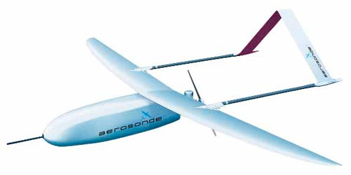
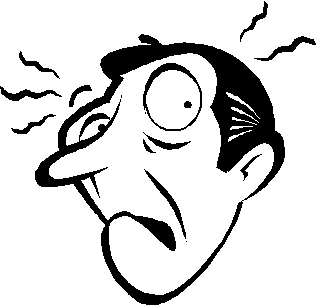
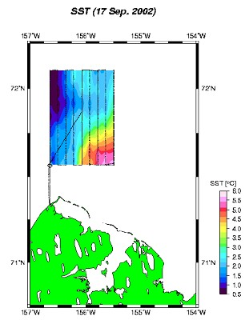
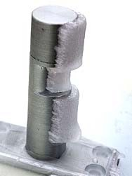
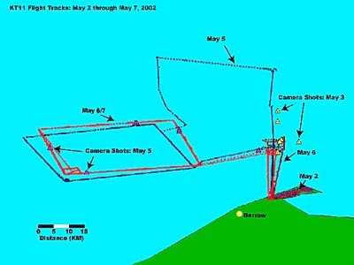

{% include google_analytics.ssi %}Polar remote sensing using an unpiloted aerial vehicle (UAV)

Aerosonde™ UAV. 2.9-m wingspan. 13-15 kg weight. The first unmanned aircraft to cross the North Atlantic.John Maurer
{% include address.ssi %}
Seminar by Dr. James Maslanik, Colorado Center for Astrodynamics Research (CCAR), University of Colorado at Boulder, November 20, 2002. Overview by John Maurer for ATOC 7500, Remote Sensing Seminar (Prof. William J. Emery), University of Colorado at Boulder. Many of the images in this presentation are pulled directly from Dr. Maslanik's PowerPoint presentation.
November, 2002
Introduction • Specifications • Advantages • Disadvantages • Applications
Due to the high cost and effort to staff traditional aircraft remote sensing expeditions—coupled with the high risk associated hazardous flying conditions—some scientists are beginning to turn to unpiloted aerial vehicles (UAV) such as the Aerosonde™ pictured above as a low-cost, low-risk alternative. Thanks to GPS technology, these UAVs can be programmed to make very detailed flight patterns that can be flown automatically and in very extreme weather conditions. Specifications for the Aerosonde are provided below, as well as a discussion of its applications and its advantages and disadvantages compared to traditional (i.e. piloted) aircraft. Aerosonde is a private, commercial company based out of Melbourne, Australia. They manage a Global Reconnaissance Facility in Melbourne from which Aerosondes anywhere on the planet can be remotely controlled and monitored. Users can also choose to run Aerosonde Virtual Field Environment software on their own personal computer, thereby defining, controlling and monitoring their own flights. Aerosonde has been around since about 1995. The first UAV to fly across the Atlantic was an Aerosonde in 1997.
Click here for a design drawing of an Aerosonde.
- Wingspan: 2.9 m
- Weight: 13 -15 kg (29-33 lbs.)
- Engine: 24cc fuel injected, premium unleaded gasoline
- Battery: 20 W-hr
- Fuel tank: 5 kg when full
- Speed: 80-150 kilometers/hour (50-93 miles/hour) cruise; 9 kilometers/hour (6 miles/hour) climb
- Range: > 3,000 km distance, > 30 hours, 0.1-6 km altitude (depending on payload)
- Payload: up to 2 kg (4.4 lbs.) with full fuel load
- Navigation: GPS
- Communications: UHF radio or LEO satellite
- Material: carbon fiber
- Propeller: rear propeller, allows for atmospheric measurements before air is disturbed by propeller
- Whereas traditional aircraft used for research like the NASA C130 and NASA P3 aircraft typically require a staff of 2-4 pilots along with a field crew of about 15, a UAV usually only requires a staff of 2-3 people. Thus, the cost and effort is dramatically lower for a field campaign using UAVs. This low cost also makes it practical to fly multiple Aerosondes at a time, which may be useful to many applications.
- The Aerosonde UAV is a "science platform": it was designed specifically with scientific research applications in mind. Data is high in quality as a result and all parameters related to the UAV are under control by the user. Typically, aircraft need to be "rigged" to accommodate various scientific applications, and a lot of times data quality suffers as a result.
- Due to the GPS navigation and control capabilities of the Aerosonde, coupled with its small size compared to an aircraft, very detailed flight patterns can be flown and with high precision.
- Having no human passengers, the Aerosonde is ideal for flying in dangerous weather conditions. And since it does not need human eyes to navigate, it is also ideal for flying in conditions of poor visibility.
- The Aerosonde can fly for an astounding 30 hours on only one gas of tank, allowing it to go long distances without having to refuel (>3,000 km). This is way better gas mileage than any aircraft has.
- The relatively slow speed of the Aerosonde (80-150 kph, 50-93 mph) allows instruments onboard to collect data at a much greater sampling rate than is possible on aircraft.
- Ability to fly very close to the surface allows for collection of very high resolution data.
- Having its propeller in the rear allows the Aerosonde to collect atmospheric measurements before disturbing the air.
- The Aerosonde control software allows the user to monitor vital signals and the course of the Aerosonde during flight. Operators can also alter the path of the Aerosonde via UAH radio or LEO satellite communications.
- The Aerosonde Global Reconnaissance Facility in Melbourne, Australia allows flights anywhere on the planet to be controlled remotely via communication satellites.

- To avoid the extra payload of adding landing gear to the body of the Aerosonde, it is designed to do a belly landing. Although this keeps the body lighter, it requires a smooth surface to land on, such as snow or sand.
- The total payload when fully fueled is only 2 kg (4.4 lbs.), limiting the weight of instruments the Aerosonde can carry. In short, many scientific instruments may be too heavy.
- The Aerosonde does not have the capability to detect other UAVs, aircraft, or other obstructions in order to avoid them.
- Due primarily to the above reason, the FAA (U.S. Federal Aviation Administration) has very tight restrictions on where and when UAVs such as the Aerosonde can be used.
- The Aerosonde equipment and flight operations staff at the Global Reconnaissance Facility in Melbourne, Australia is currently being stretched to the limits.
- The satellite communications with the Aerosonde are not totally reliable yet.

Sea surface temperature.
Icing.
Detailed flight paths over sea ice.
- Instruments currently available: digital camera, infrared thermometer, air pressure, temperature & humidity sensors.
- Instruments being developed: micro-SAR with ~1- to 2-meter resolution and a laser altimeter.
- Validation of satellite-derived products: e.g. passive microwave sea ice concentrations and sea surface temperatures.
- Support of in situ data collection efforts.
- Flying over polar regions where conditions are hazardous taking digital photos of sea ice.
- Studying conditions leading to icing of an aircraft body during ~0°-C temperatures and high humidity. Help develop technologies to prevent these conditions on aircraft carrying and being flown by humans. Icing can potentially cause an airplane to stop functioning while in flight.
- Do atmospheric profiling and flux studies, similar to how a radiosonde would.
- Use an infrared thermometer to map sea surface temperature (SST) at high resolutions.
- Micro-SAR will have the advantage of being able to see through clouds and in the dark. Will be a good tool for mapping sea ice in polar regions at very a high resolution (~1-2 meters).
- The laser altimeter will be used for producing highly detailed digital elevation models (DEM), which can be applied, for example, to studies of the mass balance of Greenland.
- Meteorological data can be collected for weather prediction and weather studies. Heavy storms can be flown into for these purposes as well, even into hurricanes.
Top of page • Introduction • Specifications • Advantages • Disadvantages • Applications
© 2002, {% include footer.ssi %}
{kind=link}
{kind=link}
{kind=link}